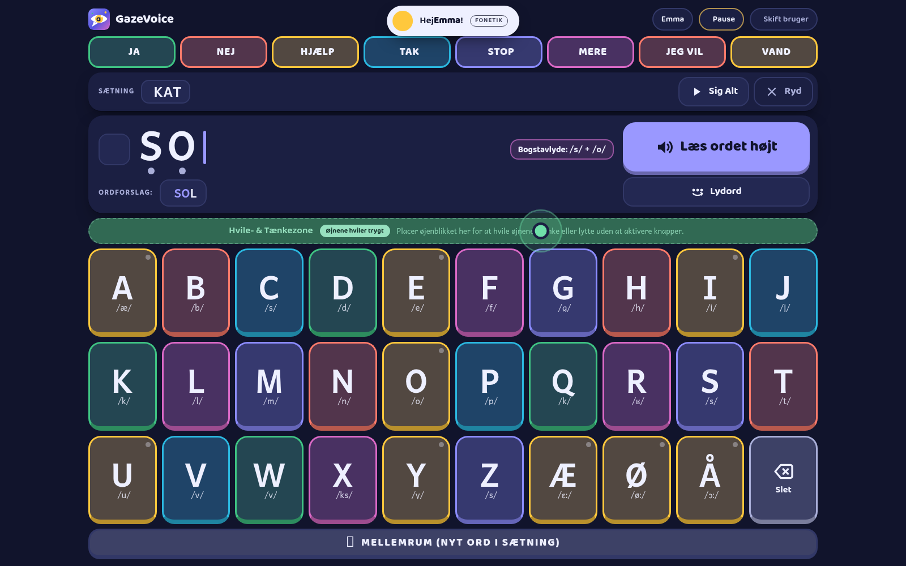
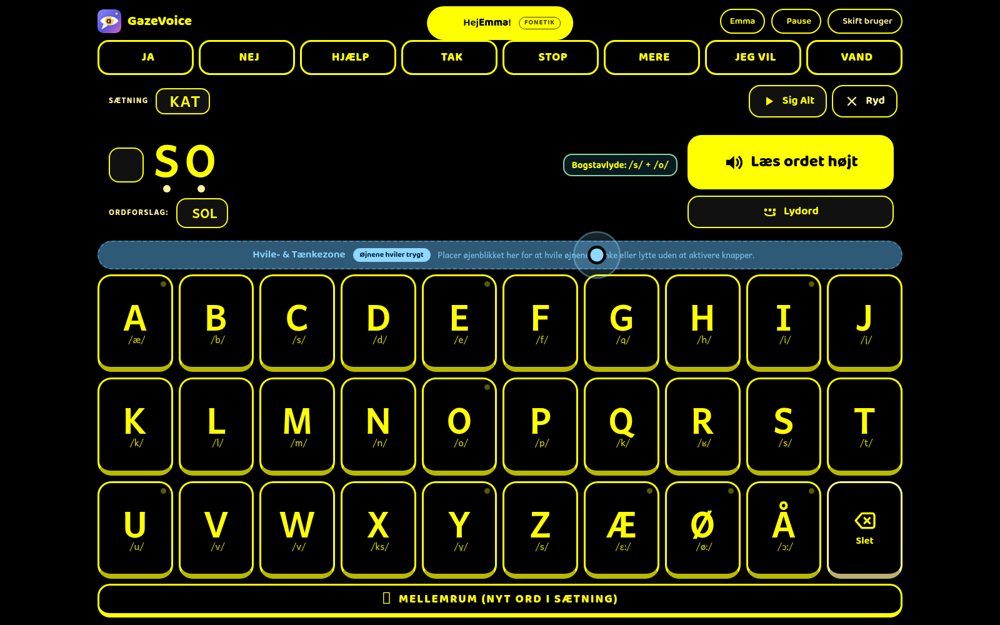
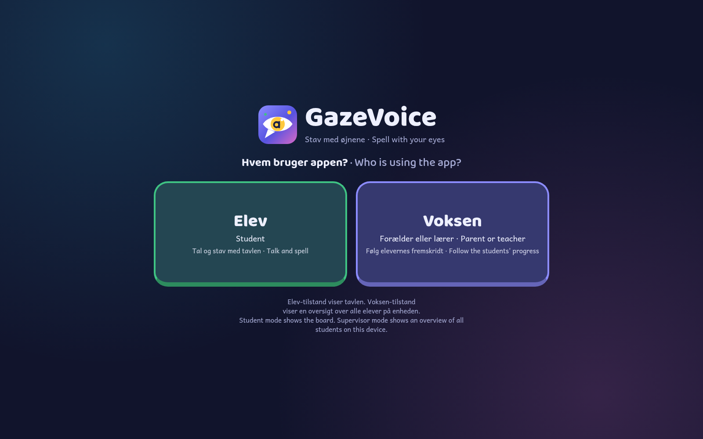
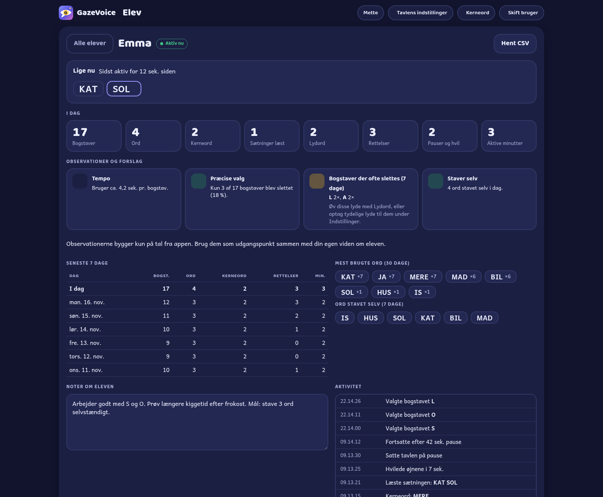

GazeVoice
Stav med øjnene
Spell with your eyes.
Geelsgårdskolen
A specialised public school — the setting that defines every requirement in this project.
Who they are
A specialised school in Virum, Denmark, run under Den Sociale Virksomhed, Region Hovedstaden.
Who they support
Children and young people with complex physical, sensory and communication disabilities.
How they work
Teachers, pedagogues and therapists around each student, with individual plans and AAC aids already in daily use.
Why we built GazeVoice
AAC tools help students request things. Far fewer help them learn to spell — in Danish.
Gaps we found
- Danish phonics needs Æ, Ø, Å, the uvular R, soft D, and silent-H pairs (hv-, hj-)
- Browser voices read a lone letter as its name — “jod” instead of the /j/ sound
- Specialised eye-gaze software is expensive and tied to specific hardware
Our constraints
- Must run on the iPads the school already has — no new hardware
- Must work offline on classroom Wi-Fi
- Pupil data must not leave the device
- A teacher must be able to adapt it in under a minute
What GazeVoice does

29-letter Danish board
Full alphabet with Æ, Ø, Å and the IPA sound on every key. English board included.
Sounds, not letter names
Phoneme-first audio, plus blends like hv- and ej. Teachers can record their own pure sounds.
Dwell selection
Hold your gaze, pointer or finger on a key; a ring fills and selects. Adjustable 0.5–2.0 s.
From letters to speech
Word suggestions, pinned core words, and “read it aloud” for the finished word or sentence.
How a student uses it
One repeatable loop, with a safe way out at any point.
Pick your name
Names used before appear as big buttons — no typing, no password.
Hold on a letter
A ring fills around the key while the student holds their gaze or touch.
Hear the sound
The letter’s phoneme is spoken, so spelling is practised by ear.
Build the word
Suggestions appear after a few letters; core words are one look away.
Read it aloud
The word moves into the sentence bar and is spoken in Danish.
Rest or pause
A rest band where nothing can be triggered, plus a full pause screen.
Designed for the child in front of it
Motor & fatigue
- Dwell time 0.5–2.0 s
- Rest zone: dwell disabled
- Pause screen
- Big-target starter layout
Vision
- CVI yellow/black high contrast
- Dark, light and calm-mint themes
- Andika letter font, built for literacy
Hearing & speech
- Voice pitch and speed sliders
- Danish system voices (Sara, Magnus)
- Teacher-recorded phonemes
Classroom reality
- Installs to the home screen
- Works fully offline
- Fonts bundled — no CDN

Where is the “AI”?
Being precise about this changes which ethical questions actually apply.
Not in the app
- No machine learning model
- No camera, face or eye detection
- No profiling or prediction of the child
- Gaze is simulated by pointer/touch dwell
Borrowed from the device
- Speech comes from the operating system’s text-to-speech
- Voice quality and pronunciation are the vendor’s, not ours
- Some platform voices process text in the cloud
Rule-based, not learned
- Dashboard “observations” are fixed thresholds we wrote
- Example: corrections ≥ 30 % of letters → suggest longer dwell
- They are hints for a teacher, never a diagnosis
Two roles on one device

Student
Sees only the board. Settings, the word editor and the progress page are hidden. Activity is logged under their name.
Supervisor — parent or teacher
Gets every setting plus the progress page. Their own trial runs are not recorded, so the student’s numbers stay clean.
How it works today
You choose a role and type a name. There is no password, no account and no server.
Separation of views, not authenticationWhat the dashboard shows

Right now
The sentence being written, and whether the student is active, resting or paused.
Today & last 7 days
Letters, words, core words, sentences read, sound-outs, corrections, breaks, active minutes.
Patterns
Most-used words, words spelled independently, letters that keep getting deleted.
Teacher control
Private notes, CSV export, and delete-history for one student or all — two clicks to confirm.
What is stored, where, and for how long
No server, no accounts, no analytics. Everything below lives in the browser on one device.
| Data | Where | Retention |
|---|---|---|
| Student & adult names | localStorage | Until the browser’s site data is cleared |
| Activity log letters, words, corrections, pauses, timestamps | localStorage | Until deleted in the dashboard. Capped at 5,000 events — oldest dropped first |
| Live sentence | localStorage | Overwritten continuously; removed by “delete all history” |
| Teacher notes | localStorage | Until site data is cleared — not removed by delete-history gap we found |
| Recorded phoneme sounds | IndexedDB | Until deleted per sound in Settings |
| App shell, fonts, icons | Cache Storage | Until a new app version replaces it |
Data Stewardship Canvas · AI-DR 2026
Nine steps, with an honest status for each.
1 · Demand met
Literacy access for students without speech.
2 · Supply met
Minimal: a first name, selections, timings. No diagnosis, no biometrics.
3 · Value met
Independent practice. No ads, no resale, no tracking.
4 · Risk partial
Child data sits unlocked on a shared iPad.
5 · Operations partial
Roles are separated but not authenticated.
6 · Governance open
School sign-off and guardian consent not yet obtained.
7 · Infrastructure met
Device-local by design; cloud sync deliberately out of scope.
8 · Decision use partial
Observations guide a teacher; thresholds are untested.
9 · Impact open
No pilot, no KPIs, no learning outcomes measured.
What we found wrong with our own tool
Privacy & access
- No authentication: anyone who opens the app can read every student’s log on that device
- Shared iPads: names and history persist for the next person
- Teacher notes survive “delete history” — a bug, not a policy
- No consent record and no audit trail of who looked
Product & evidence
- Dwell can repeat if a pointer rests on a key — it should require leaving first
- Phoneme audio is a workaround (“jø” for J); pure sounds need teacher recordings
- Thresholds are our guesses, not validated against therapist judgement
- No user testing yet — no usability or learning results exist
What “ready” would require
| Step | Action | Done when |
|---|---|---|
| Lock the adult view | Supervisor PIN; a teacher sees only assigned students | No cross-student exposure on a shared device |
| Fix the two defects | Notes covered by deletion; dwell requires gaze to leave a key | Verified by test, not by eye |
| Write it down | One-page data and retention note for the school, in Danish | Accepted by the school’s data contact |
| Get permission | School sign-off and informed guardian consent | Signed before a single student logs in |
| Supervised pilot | 3–5 students with a therapist present; usability first | Selection accuracy and fatigue measured per student |
| Then outcomes | Phoneme recognition before and after, agreed with the therapist | Change measured against a baseline — or we stop |
Giving every child
a voice.
Sources: Geelsgårdskolen · Den Sociale Virksomhed, Region Hovedstaden · densocialevirksomhed.dk/geelsgaardskolen | Canvas: AI-DR 2026 course material | Fonts: Andika (SIL) & Baloo 2 (Ek Type), OFL 1.1 | Code: github.com/aiethicsjonas-cloud/Ai-aac-phonics-app